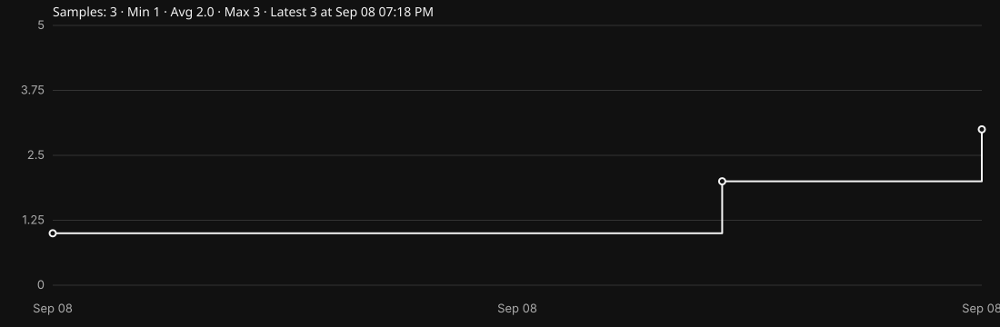

BottleRag Radio
Now Playing
updates automatically

No probe data yet.
Complete JSON returned by the public now-playing API.
Loading…
Now Playing and Recently Played update independently using the lowest-data method available. Realtime push is preferred when the server supports it.
All optional categories start collapsed whenever the player opens. Now Playing and Recently Played stay open.
My Listening History and Observed BottleRag History are stored locally in this browser using IndexedDB.